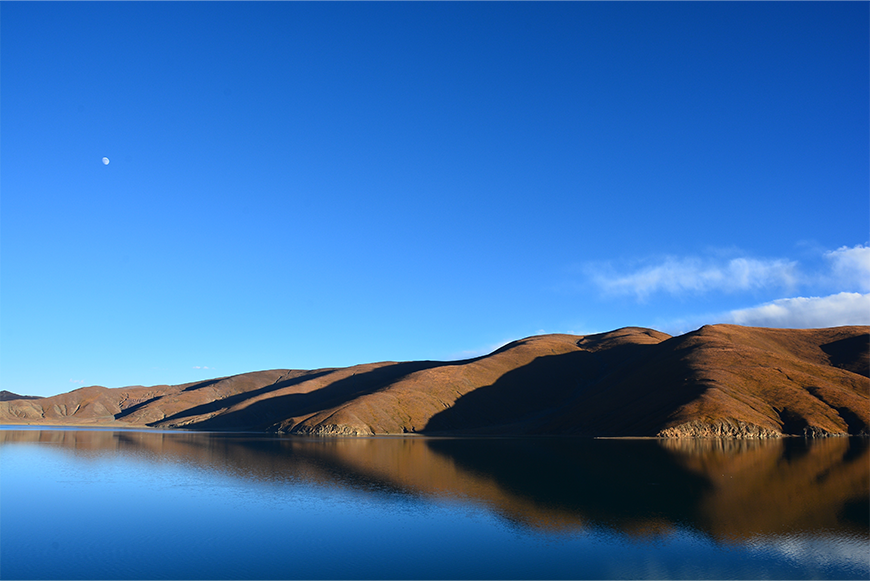
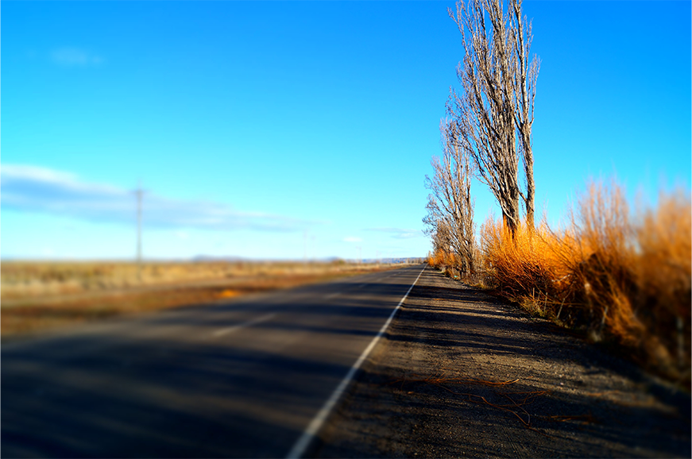

额尔喀斯湖
2016-06-20

随着潜水运动风靡全球，走进水中世界已不再是一个童话般的心愿，而是一份令您惊喜不已的浪漫。徐徐潜入清凉明澈的水中，阳光被水折射成无数个星星，在眼前不断地闪烁、耀动。潜水的好处不仅在于水中的奇异世界给人的精神带来的巨大享受，而且更重要的是能够提高并改善人体的心肺功能。

额尔喀斯湖
2016-06-20
随着潜水运动风靡全球，走进水中世界已不再是一个童话般的心愿，而是一份令您惊喜不已的浪漫。徐徐潜入清凉明澈的水中，阳光被水折射成无数个星星，在眼前不断地闪烁、耀动。潜水的好处不仅在于水中的奇异世界给人的精神带来的巨大享受，而且更重要的是能够提高并改善人体的心肺功能。 巴瑶族（Bajau）是东南亚的一个民族，生活在菲律宾、马来西亚和印度尼西亚之间海域。多数人潜海捕鱼为生。常被称为“海上吉普赛人”，被认为是最后一支海洋游牧民族。巴瑶族（Bajau）是东南亚的一个民族，生活在菲律宾、马来西亚和印度尼西亚之间海域。多数人潜海捕鱼为生。常被称为“海上吉普赛人”，被认为是最后一支海洋游牧民族。